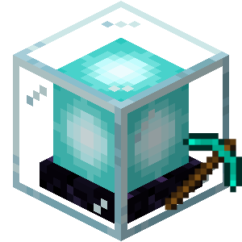

ItemCollector
Item Collection Leaderboard and Block Miners

Overview
ItemCollector introduces an engaging item collection leaderboard, allowing players to compete by collecting items with configurable values. This feature not only fosters individual competition but also enables players to form teams, creating an independent team leaderboard that encourages collaboration.
To spice up the competition, the plugin includes block miners that automate the collection of mine-based items. With multiple upgrades available, players can increase their mining area, boost collection speed, and even engage in digital mining, extracting ores without physically breaking blocks.